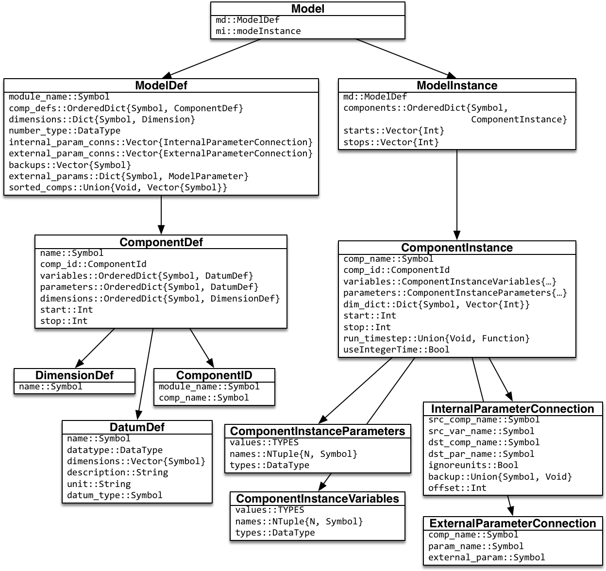

Mimi Internal Structure
1. Code organization
Types
All Mimi types are defined in Mimi/src/core/types.jl.
The types are broadly divided into two categories reflecting "structural definitions" versus "instantiated model info". Structural definition types include:
ModelDefComponentDefDatumDef(used for both variable and parameter definitions)
Instantiated model info types include:
ModelInstanceComponentInstanceComponentInstanceVariablesComponentInstanceParameters
Model object
The "user-facing" Model no longer directly holds other model information: it now holds a ModelDef and, once the model is built, a ModelInstance, and delegates all function calls to one or the other of these, as appropriate. The "public" API to models is provided by functions taking a Model instance, which are defined in the file model.jl.
With this change, all previous "direct" access of data in the Model instance are replaced by a functional API. That is, all occurrences of m.xxx (where m::Model) have been replaced with function calls on m, which are then delegated to the ModelDef or ModelInstance, as appropriate.
To simplify coding the delegated calls, a new macro, @modelegate allows you to write, e.g.,
@modelegate external_param_conns(m::Model) => miwhich translates to:
external_param_conns(m::Model) = external_param_conns.mi)The right-hand side can also be => md to indicate delegation to the ModelDef rather than to the ModelInstance. See model.jl for numerous examples.
Connections
The types InternalParameterConnection and ExternalParameterConnection are now both subtypes of the abstract type Connection.
[We may merge these two connection types since the only functional differences are that the ExternalParameterConnections type has fewer fields and its instances are stored in a separate list in the model.]
ComponentInstanceData
ComponentInstanceVariables and ComponentInstanceParameters are parametric types that are subtypes of ComponentInstanceData. The names and types of the variables or parameters are encoded into the type information; the struct proper contains only the parameter or variable values. Use of this parametric type allows us to use @generated to produce type-specific getproperty and setproperty! functions that efficiently access model parameters. [See Dot-overloading, below.]
2. Changes to @defcomp
Macro simplification
The @defcomp macro has been substantially simplified by relying on MacroTools.jl package and by avoiding the construction of expressions using Abstract Syntax Tree form. The macro now operates by producing a fairly simple sequence of function calls.
Dot-overloading
In a change from the prior iteration of Mimi, the run_timestep function must now be defined within the @defcomp macro. It takes four arguments: parameters, variables, dimensions, and time.
function run_timestep(p, v, d, t)
...
endWith the run_timestep function inside the @defcomp macro, we are able to modify the code to translate references like p.gdp and assignments like v.foo = 3 to use new @generated functions getproperty and setproperty!, which compile down to direct array access operations on the values field of parameter and variable instances.
Component naming
In the previous version of Mimi, components were named by a pair of symbols indicating the module the component was defined in, and the name of the component. Each component was also reified in a newly generated custom type.
In the new version, all component definitions are represented by one type, ComponentDef. The @defcomp macro creates a global variable with the name provided to @defcomp which holds a new type of object, ComponentId, which holds the symbol names of the module and component. The name of the model given in the @defcomp macro invocation becomes a variable holding the ComponentId. Thus, instead of referring to a component as, say, (:Mimi, :grosseconomy), you refer to it by its associated global constant, e.g., Mimi.grosseconomy. Note that models can be defined in their own module to avoid namespace collisions.

3. Pre-compilation and built-in components
To get __precompile__() to work required moving the creation of "helper" components to an __init__() method in Mimi.jl, which is run automatically after Mimi loads. It defines the three "built-in" components, from adder.jl, multiplier.jl, and connector.jl in the components subdirectory.